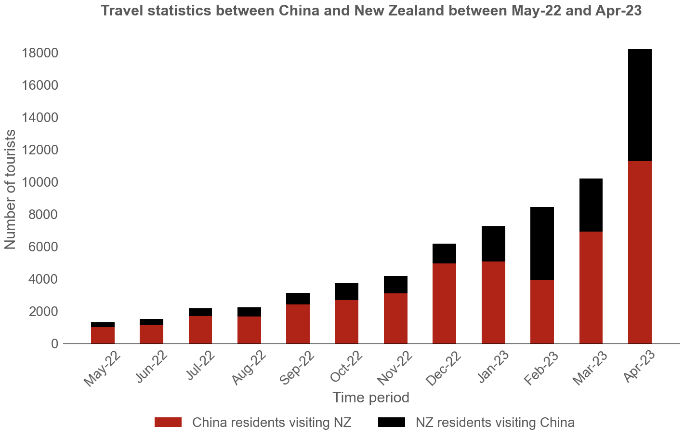
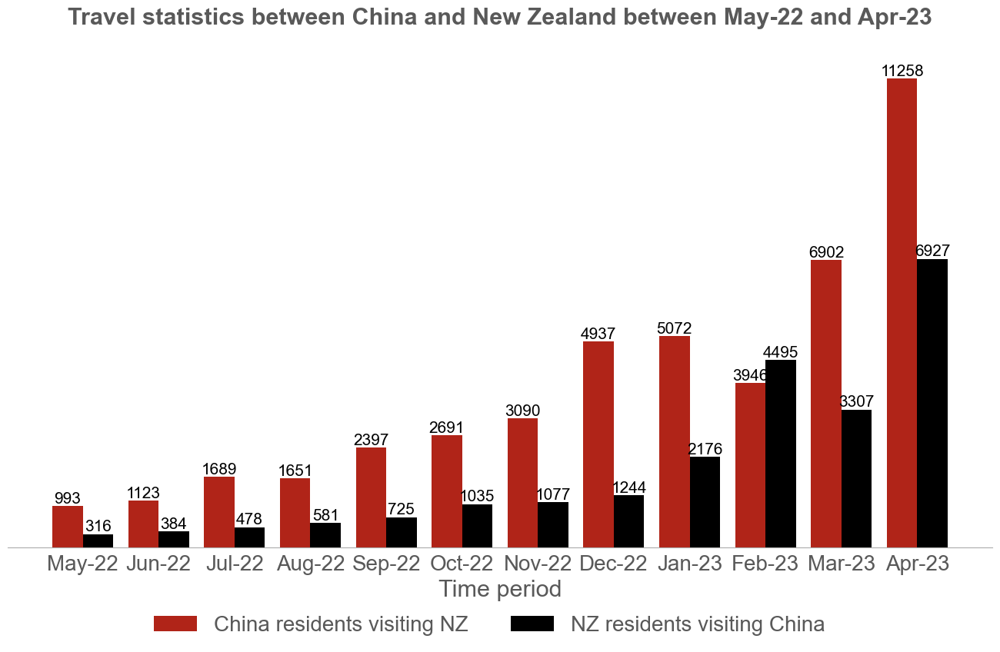
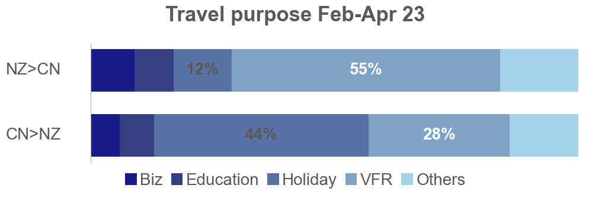

Article Part
Author: Yifei Cui, Sichen Lin, Xuran Zhu, Shuhao Li
Team ID: T6
Date: 2023-12-21
This project undertakes the analysis and improvement of an information visualization portraying the fluctuations in visting numbers and visa purposes between China and New Zealand from May 2022 to April 2023. The selected visualization is a complex graph containing 1 line chart and two stacked bars with different unit. In the project's initial phases, we explained the rationales behind choosing this visualization, providing insights on how to read it, and subsequently replicate the graph using Python. Despite its informativeness, the graph exhibits certain shortcomings, which are analyzed in the Problem Statement section of the project report. Meanwhile, in order to address the identified issues, we propose some advices to improve the performance. Following the proposal of improvements, we proceed to implement these changes, generating a new visualization. These modifications enhance the overall readability and interpretability of the visualization, and we will illustrate the reason why these changes are useful. Through analysing and improving this diagram, our team members enhance the python skills and reviewed most of the theory from the information visualization course.
Figure 1. The original visualization shared public.
Tourism is an important part of the country's income. The global tourism industry has experienced a substantial downturn due to the impact of the COVID-19 pandemic and policy-driven lockdowns. New Zealand has been an attractive destination for Chinese tourists. However, during the pandemic, the bilateral exchange of visitors saw a significant decline. In the post-pandemic era, China has implemented numerous positive measures to revitalize the international tourism sector after lifting pandemic-related restrictions. Notably, New Zealand was one of only 20 countries granted 'approved destination status' by China's Ministry of Culture and Tourism starting from February 6, 2023. The trial program allows nationwide travel agencies and online tourism enterprises to operate outbound group tours and "flight + hotel" services for Chinese citizens heading to relevant countries.
The original URL of the original visualization: https://www.inkl.com/glance/news/a-chinese-tourism-revolution-heading-for-nz?first_login=true§ion=personalized.
As members of the group had travelled to New Zealand and all of us have witnessed the negative impact of the pandemic on the tourism industry, our team became interested in this visualization chart about tourism between China and New Zealand, and eventually chose it as our topic.
Generally, we have the following questions:
Before and after Chinese government adopt the various measures mentioned above, how have the numbers of travelers between China and New Zealand changed? Have they been steadily on the rise?
This graph illustrates the total number of people traveling between China and New Zealand from May 2022 to April 2023, including the overall numbers, the recovery condition, and the proportion of visits for various purposes.
The overall number of travels steadily increases throughout the entire period. The recovery levels, except for a slight decline in January 2023, continue to rise. Regarding the purpose of travel, a notable proportion of Chinese visitors to New Zealand are inclined towards vacation purposes, while among the New Zealanders traveling to China, a significant portion is accounted for by those visiting friends and family.
Generally, this graph can be divided into three parts: a stacked bar chart(Column), a line chart, and another stacked bar chart(Row) on the top.
The stacked bar chart (Column) positioned along the x-axis illustrates the total number of individuals traveling between China and New Zealand. The upper segment represents the number of people traveling from New Zealand to China, and the lower segment denotes the reverse. This chart corresponds to the left y-axis, which represents the overall count of individuals traveling between New Zealand and China.
The line chart denotes the recovery ratio of tourism numbers, corresponding to the right y-axis. Notably, it's essential to recognize that the graph lacks a specified reference standard year.
At the top of the graph, the stacked bar chart (Row) provides a comparison of travel purposes. It offers an approximate percentage without specific numerical values. The graph above indicates the purpose of New Zealand travellers to China, the lower graph shows the purpose of travelling from China to New Zealand.
The position and direction of the line chart. The size and position of bars on the stacked bar chart. The color of the bars on the stacked bar chart.
This visualisation has a number of advantages in terms of effectively conveying information:
As analyzed the visualization detailedly, we not only identified specific visual deficiencies, such as high complexity, rotated labels, double y-axis, and the absence of titles, but also find some intentionally crafted elements designed to misguide, such as misleading stacked bars.
In the upcoming sections, we'll detailedly unravel these shortcomings. We invite readers to join us on this journey to enhance the effectiveness of this visualization.
The visualization violates both Cognitive Theory and Graphical Integrity.
Firstly, in Cognitive Theory, there is a focus on the constraints of working memory capacity, urging us to present visualizations with a minimal amount of information. However, this graph contains too many details. It comprises three major parts: 2 stacked bar charts and 1 line chart. When readers go through it quickly, the great amount of information put a great burden on the their extraneous cognitive load. So, this graph is too complex, and it should be presented in a more concise and intuitive way!
Secondly, Graphical Integrity argues: "Clear, detailed and thorough labeling should be used to defeat graphical distortion and ambiguity." Try to write out explanations of the data on the graph and label important events in the data. Without labeling, do you know what this graph is trying to convey? And for someone unfamiliar with the terms such as 'VFR', the chart reflects nothing but an obvious upward trend. As stated earlier, this may be misleading.
To conclude, there is hardly any descriptive text on this visualization. No figure titles, no axis titles, and the meaning of the legend is obscure. No explanatory text tells the readers what the inflection points on the line chart mean and whether any special events occurred during the month. That is, the readers are lack of context to understand the data thoroughly.
In brief, the graph needs to be redesigned to present the information in a more concise and clear way, and add necessary explanatory text to mitigate ambiguity.
Now, let's focus on the main part of this graph, the stacked bar and line graph. Besides violating Cognitive Theory and Graphical Integrity, it also has issues with the use of a double y-axis, redundant data-inks, rotated axes ...
Lack of axis titles: The roles of the y-axis and x-axis are unclear at first glance. Besides, can you understand what 'Recovery' exactly means? Our team members have already worked it out, but here we leave a little suspense. Keep reading and we will reveal it later.
Double y-axis: Line and bars compare variables with different units. This graph is not a pareto chart and should not use a double y-axis. Deliberately displaying all the information in one graph can insteadly result in spurious correlation. Separating charts would be the better choice.
Designed variation:
Misleading bars: The article's title is 'A Chinese tourism revolution heading for NZ', and the whole article deepens the point about the growing number of Chinese visitors to New Zealand. Initially, when glancing at the graph, the bars seem to rise continuously. But looking closely, these bars combine the number of both China to New Zealand, and New Zealand to China travellers. Focusing on the red part of the bar alone (the number of China to New Zealand travellers), there was in fact a decline in February 23. People can only process 1 percent of the visualization and cannot discover the actual trend. The author's use of a stacked bar chart appears deliberate in creating an upward trend, potentially misleading readers. Therefore stacked bar chart is not an appropriate type of this visualization. It is a graphical duck just for the sake of chart aesthetics, and intentionally creates misleading.
Normalized unit ambiguity: While the graph uses a normalized unit for time series data, it lacks a clear reference point. Here, we unveil the suspense left behind. After carefully reading the news text, searching for the original data and checking them one by one, we determined that the term 'Recovery' represents the % of tourists compared to pre COVID, i.e. 2019. Without any supporting information or priori knowledge, how could readers possibly guess that? So, the legend should be revised to include this description.
Axis redundancy: The left y-axis introduces redundant data-ink with a nuturally happening cognitive tunnel, forcing readers to search for data and approximate values, increasing cognitive load.
Rotated labels & Dense axis: In visualization, the text labels should never be rotated. What is more, the x-axis is too dense. Some enhancements should be taken timely.
In summary, this stacked bar and line chart makes many common visualisation mistakes. The most serious of these are precisely defined variables, double y-axis, and the deliberate design of an upward trend.
Now, let us analyse the last part of this chart, this percentage stacked bar chart.
So, for this percentage stacked bar chart, the unclearly labelled data scale labels, the inappropriate color scheme, all adding to the difficulty of reading. And we need to adjust it.
In order to solve the shortcomings exist in this graph and turn it into a clear and understandable visualisation, which accords with the Cognitive Theory and the Graphical Integrity. we have proposed targeted improvements for each problem. In this section, please join us to implement the changes step-by-step. You will get an insight into how we achieve it. And, at the end, you will see how great the tweaked visualisations are! So, let's get started!
Figure 2. The original visualization shared public.
Figure 3. The replicated visualization.
Step1. Separate the original graph.
Figure 4. Stacked bar and line chart separated from original visualization.
Figure 5. Percentage stacked bar chart separated from original visualization.
Analysis:
Compared to the original visualisation where all the information is piled up in a single diagram, separating the original graph into simpler, individual sections can effectively reduce extraneous cognitive load. This makes the information more digestible and less overwhelming for the viewer, improving their ability to process and retain the information. This is consistent with the principles of Cognitive Theory.
Step2. Separate the graph again.
Figure 6. Stacked bar chart separated from separated graph.
Figure 7. Line chart separated from separated graph.
Analysis:
Separating the graph to address the issue of a double y-axis would enhance the clarity and accuracy of the data representation, thereby avoiding the risk of Spurious Correlations. This would align with best practices in data visualization and is less misleading compared to the original chart.
Step3: Add a clear, self-explanatory title.
Figure 8. Stacked bar chart with clear title.
Figure 9. Line chart with clear title.
Analysis:
Adding a clear, self-explanatory title to the graph would greatly uphold the principles of Graphical Integrity by reducing ambiguity and enhancing the viewer's understanding of the data. This enhancement would not only clarify the graph's purpose and trends but also prevent misinterpretation, ensuring that the graph conveys its intended message accurately and effectively to viewers.
Step4: Label all axes carefully.

Figure 10. Stacked bar chart with clear axis title.
Figure 11. Line chart with clear axis title.
Analysis:
Precise and descriptive axis titles would significantly facilitate the graph's interpretability. It addresses current issues like unclear roles of the y-axis and x-axis, which inevitably lead to confusion, particularly with terms like 'Recovery'. What is more, it also describes the reference point for normalizing time series data, year 2019.
Step5: Replace with a grouped bar chart.
Figure 12. Grouped bar chart derived from stacked bar chart.
Analysis:
Replacing stacked bars with grouped bars is a very crucial operation that corrects the wrong use of chart types. The original visualization attempts to mask the actual trend of Chinese tourists to New Zealand, which declined in Feb-23, with the trend of the total number of tourists from the two countries that is rising consistently, intentionally conveying an illusion to the readers. Question-driven rather than data-driven is inappropriate in data analysis. Our improvement ensures the visualization truthfully reflects the data without aesthetic bias or misinterpretation.
Step 6: Erase redundant data-ink.
Figure 13. Grouped bar chart without redundant y-axis.
Analysis:
Erasing redundant data-ink, such as the unnecessary y-axis from the graph streamlines the visualization. And clearly labelled data can avoid naturally happened Cognitive Tunnel, preventing readers from searching for data and approximating values, thus making the graph more accessible and user-friendly.
Step 7: Adjust the axis spacing.

Figure 14. Grouped bar chart without rotated labels.
Figure 15. Line chart without rotated labels.
Analysis:
Adjusting the axis spacing and refraining from rotating text labels in the graph would greatly improve readability and release readers' unnecessary cognitive load. This adheres to best practices in data visualization for maximum clarity and effectiveness.
Step 8: Modify the image color.

Figure 16. Percentage stacked bar chart with a meaningful color gradient.
Analysis:
In contrast to the original visualization, we modify the image color to utilize a meaningful color gradient. This change not only solves the issue that the current colour scheme only adds complexity without conveying useful information, but also makes the visualization more visually appealing. It increases the chart's overall effectiveness in data presentation.
Step 9: Label each point and section with an accurate value.
Figure 17. Line chart with accurate data value label.
Figure 18. Percentage stacked bar chart with accurate data value label.
Analysis:
Labeling each point and section in the graph with accurate values would greatly enhance its clarity and utility, addressing the current issue of unclear data proportions that leave too much interpretation to the viewer. This addition of specific data labels would facilitate a more immediate and precise understanding of the graph's content, ensuring that the viewer can easily grasp the full extent of the data without unnecessary guesswork or approximation.
Step 10: Use annotations and add explanation.
Figure 19. Stacked bar chart with annotation and explanation.
Figure 20. Line chart with annotation and explanation.
Figure 21. Percentage stakced bar chart with new legend.
Analysis:
Compared to the original visualization, we have included some some explanatory text that illustrates the potential reasons for the change in trend and the appearance of inflection points in the chart. Moreover, the legend has also been modified so that readers who are not experts in this field can easily understand its meaning as well. This initiative addresses current lack descriptive elements by providing necessary context, significantly bolster the visualizations' Graphical Integrity. In a word, this enhancement would not only assist in accurately conveying the graph's message, particularly to those unfamiliar with specific terms or trends, but also prevent potential misinterpretation or oversight of important data points and events, ensuring a comprehensive and transparent data presentation.
Throughout the process of enhancing the graph, We practically applied the techniques of modifying the graph but also revisited theoretical concepts such as Visualization Principles of Graphical Excellence, Graphical Integrity, Cognitive Theory, Cognitive Load (Cognitive Tunneling), Proceduralization, and apply them appropriately to analyze and enhance the graph.
The improvement process can be categorized into three main parts:
Through the 10-step modifications, the revised graph has had a positive impact on both the visualization and the topic discussion.